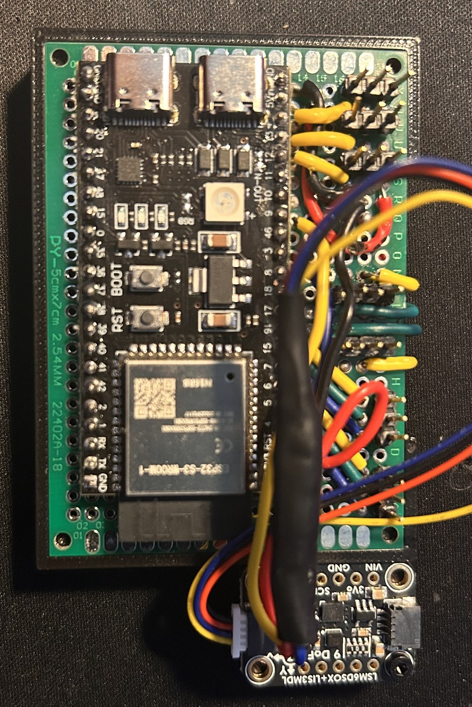
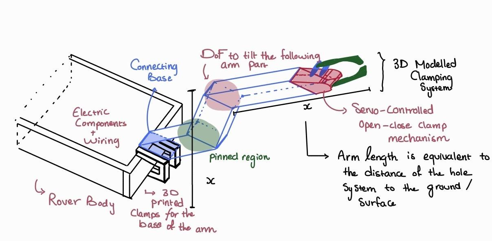
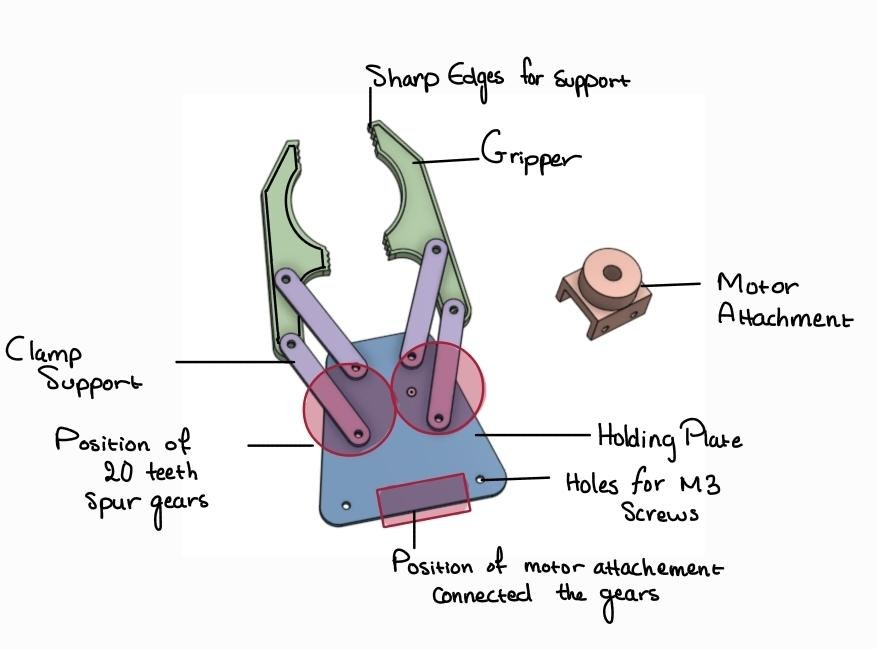
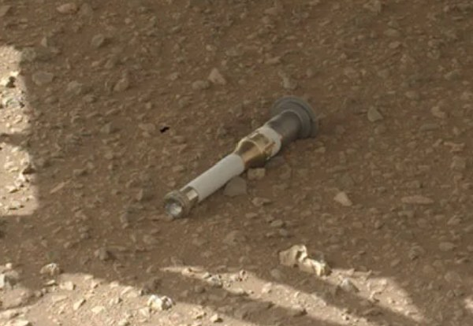

HERSHEY — Autonomous Mars Sample-Retrieval Rover

A team design project for a fictional client (Up Goers Ltd.) framed around a real mission concept: retrieving the sample tubes cached by the Curiosity and Perseverance rovers at Mars' Three Forks depot. As Team SMORES (Sustained Mars Operations & Robotic Exploration Systems), we designed and built HERSHEY, a 4-wheel-drive rover meant to autonomously navigate to the depot, locate sample tubes with onboard vision, and retrieve them with a dedicated collection arm -- built and demonstrated as a working prototype on a Lynxmotion chassis rather than flight hardware.
Demo
System Architecture
HERSHEY splits compute across two layers: an Arduino Uno handles hard real-time sensor reading and motor control, while a Raspberry Pi 4 runs ROS 2 Humble for SLAM, navigation, and image recognition. The two communicate over a serial bridge; a Foxglove Studio HMI connects wirelessly to the Pi's ROS 2 network for remote telemetry, visualization, and manual override.

Chassis & Locomotion
Built on a Lynxmotion A4WD1 kit: four fixed wheels driven by 12V DC planetary gear motors in a skid-steer configuration, steered by driving the left and right sides at different velocities -- feeding directly into the controller's differential-drive kinematics.
Hardware Exploration: ESP32 Migration
In parallel with the Arduino Uno WiFi Rev2 build (the version actually committed as the
project's platformio.ini target), the team wired up and tested an ESP32-S3 dev
board with an external Adafruit LSM6DSOX + LIS3MDL 9DOF IMU, aiming for micro-ROS support,
more GPIO, and a faster clock than the Uno's 16 MHz. A full pinout/wiring diagram was
drawn up for the swap (SHARP IR sensors, quadrature encoders, dual motor driver, IMU over
I2C).

Motor Controller
The designed motor controller (below) takes target linear/angular velocity and turns it into left/right PWM through an acceleration limiter, a PID correction on yaw rate (from the IMU), differential-drive kinematics, and a per-wheel hybrid controller blending a feedforward lookup table with PID correction from encoder feedback -- switching to macro-pulsing (short pulses at minimum-viable PWM) below the DC motors' stall voltage, where continuous PWM can't hold a speed at all.

What's actually in the repo right now is the baseline of that design: a working PID loop on both linear velocity (averaged from the left/right encoders) and angular velocity (IMU yaw), with integral windup guards, feeding a differential-drive mix into the H-bridge. The feedforward lookup table and macro-pulsing stage in the diagram above are the documented next step -- I don't have confirmation of whether they made it into the final build before demo day. Flagging this rather than claiming more than I can verify from the code.
Perception, SLAM & Navigation
A Slamtec LiDAR publishes 2D range data to /scan; a URDF model of the rover
defines the physical/kinematic tree so every sensor reading is correctly positioned relative
to the chassis. SLAM Toolbox fuses the LiDAR scans with wheel odometry and IMU data to build
a 2D occupancy grid map while correcting for odometry drift. Nav2 provides global path
planning (A*) and a local planner for obstacle avoidance, and a Pi Cam feed processed with
OpenCV handles sample-tube detection on final approach.


| Node | Publishes | Subscribes | Role |
|---|---|---|---|
| SLidar Node | /scan | -- (raw serial) | Formats LiDAR range/angle stream into sensor_msgs/LaserScan |
| Arduino Bridge | /odom, /imu_data, /joint_states, tf | Arduino serial stream | Parses hardware data, republishes as ROS 2 topics, broadcasts odom->base_link |
| Robot State Publisher | /tf | /joint_states, URDF | Computes exact 3D pose of every link from the kinematic tree |
| SLAM Toolbox | /map, tf (map->odom) | /scan, /odom, /tf | Builds the 2D occupancy grid, corrects odometry drift |
| Foxglove Bridge | WebSocket | /scan, /odom, /tf, /joint_states, /map | Serializes the whole state for remote visualization |
| Nav2 (planned) | /cmd_vel | /map, /scan, /odom, /tf | Global (A*) + local planning to close the autonomy loop |
Sample Collection Mechanism
A 2-DOF robotic arm mounted to the chassis tilts down up to 90 degrees to reach the ground, ending in a servo-driven gripper: two 3D-printed jaws opened and closed by a pair of 20-tooth spur gears turning in opposite directions. Sized against NASA's published sample-tube dimensions (15-18 cm long, ~1.5 cm radius), the gripper closes to a ~23 mm radius to secure the tube from its edges without needing precise centering.



Human-Machine Interface
Foxglove Studio connects to the Pi's ROS 2 network over WiFi to render the live SLAM map, the rover's URDF model, camera feed, and hardware telemetry (wheel RPM, PID error, IMU data) without adding compute load to the Pi. It also accepts mission start/target coordinates and manual velocity overrides. A heartbeat timeout on the Arduino side brings the rover to a safe stop automatically if it loses contact with the Pi.


Systems Engineering: Regulatory & Cost Framing
Beyond the robot itself, the project scoped HERSHEY against real constraints a Mars mission would face: the 1967 Outer Space Treaty and NASA planetary-protection rules for forward/backward contamination, alignment with UN Sustainable Development Goals #12 and #13, NASA's hardware quality-assurance lifecycle requirements, and a cost-benefit comparison between the prototype's off-the-shelf components (Arduino, RPLIDAR, SHARP sensors) and their flight-grade equivalents (radiation-hardened processors, fiber-optic IMUs, spectrometer-based sensing).
Custom PCB
Partially resolved -- the repo's PCB folder has a Fritzing wiring diagram and ESP32 pinout for the exploration branch above (sensors + dual motor driver + IMU), but that's a point-to-point wiring layout, not a fabricated custom PCB. The Conceptual Design Report also references a separate "sample collection breakout board" that the Arduino talks to alongside the motor driver -- I still don't have specifics on that board. If it's a real board, let me know what's on it.
Status
Confirmed from the team's own Foxglove capture (screenshots and photos above, dated into late March): the ROS 2 Humble workspace, URDF model, and SLAM Toolbox mapping pipeline (fused from LiDAR + Arduino odometry/IMU data) are live and building real occupancy maps. The baseline PID motor controller, sensor suite, and Pi-Arduino serial bridge are implemented. Nav2 integration for full closed-loop autonomous navigation, the feedforward/macro-pulsing upgrade to the motor controller, the sample collection arm's electromechanical build, and onboard image recognition are the next milestones.